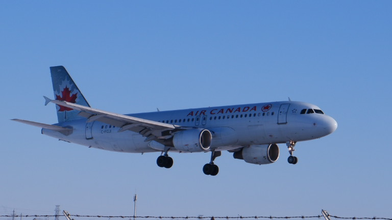
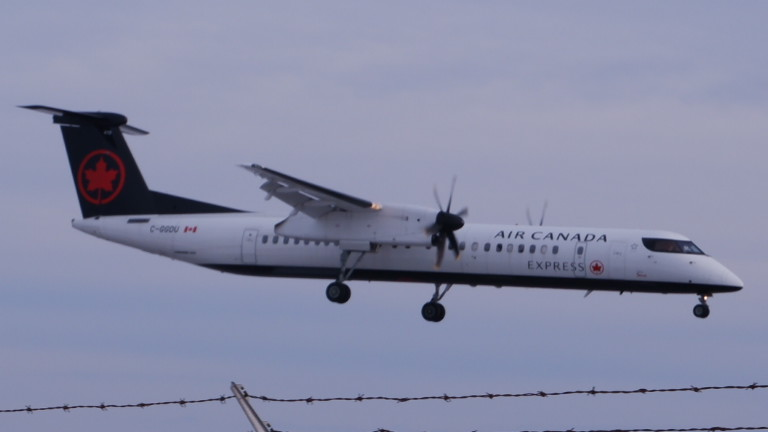

Welcome to the Planespotters club website, we hope you enjoy these photos!


The first photo on top of this writing on the left is of C-FGJI, an Air Canada A320. The photo was taken on Monday
February the 15th at 4:08pm at Thunder Bay Airport. The second photo on top of this writing on the right is of C-GGDU, an
Air Canada De Haviland Dash-8 (Q400). The photo was taken on Friday, February the 26th at 4:35pm at Thunder Bay Airport.